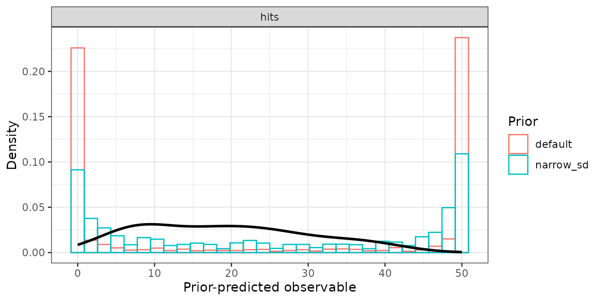
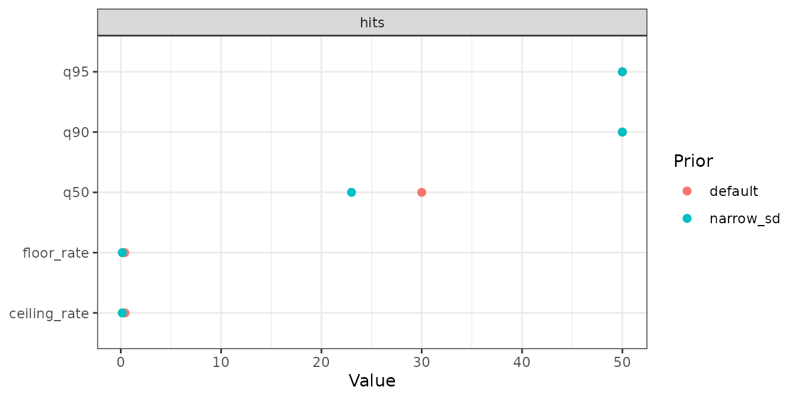
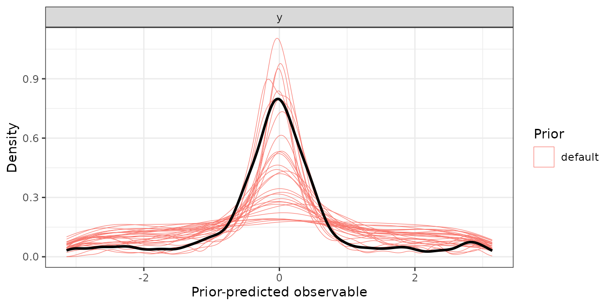

Prior predictive checks on the observable scale
Source:vignettes/articles/prior-check.Rmd
prior-check.RmdPriors of cognitive measurement models are set on the link scale, and
what a normal(0, 1) there means for the data is rarely
obvious. prior_check() answers that directly: it fits the
model with sample_prior = "only", draws from the prior
predictive distribution and summarises the draws on the scale of the
response. Because the draws come from bmm’s own fit, the prior being
checked is exactly the prior bmm fits with, defaults included.
The fits go through fit_cached(), so each prior set
compiles and samples once and later calls reuse it. Two checks are shown
below: a signal detection model, whose count response has a floor and a
ceiling, and a mixture model with a statistic of our own.
A count response: sdt_yn
The first example is the check behind
prior_check_sdt_yn, the prior check that ships with the
package. It compares bmm’s default priors with a set that narrows the
priors on the between-subject SDs:
sdt <- bmm::sdt_yn(response = "hits", stimulus = "stim", n_trials = "n")
sdt_data <- simulate_recovery(
sdt,
pars = c(d = 1, criterion = 0.3), sds = c(d = 0.3, criterion = 0.3),
n_subjects = 20, n_trials = 50, seed = 2026
)$data
narrow_sd <- brms::set_prior("normal(0, 1)", class = "sd", dpar = "d") +
brms::set_prior("normal(0, 1)", class = "sd", dpar = "criterion")
prior_check_sdt_yn <- prior_check(
sdt, recovery_formula(sdt), sdt_data,
prior = list(default = NULL, narrow_sd = narrow_sd),
n_draws = 100, seed = 2026,
file = "data-raw/fits/prior-check/sdt_yn",
chains = 2, iter = 1000, backend = "cmdstanr", refresh = 0, silent = 2
)prior is either one prior (or NULL for
bmm’s defaults) or a named list of prior sets. Each set
is fitted separately, its fit cached at
<file>-<set>, and becomes one level of the
prior column.
prior_check_sdt_yn
#> <bmmtools_prior_check>
#> Model: Signal Detection Theory (Yes/No); 2 prior sets: default, narrow_sd.
#> Prior-predictive draws per set: 100.
#>
#> # A tibble: 5 × 5
#> response statistic default narrow_sd difference
#> <chr> <chr> <dbl> <dbl> <dbl>
#> 1 hits floor_rate 0.392 0.152 -0.241
#> 2 hits ceiling_rate 0.420 0.146 -0.274
#> 3 hits q50 30 23 -7
#> 4 hits q90 50 50 0
#> 5 hits q95 50 50 0The default summary has five statistics per response:
-
floor_rateandceiling_rate: the share of all prior-predictive values, over draws and observations, at or below the floor and at or above the ceiling of the response; -
q50,q90andq95: quantiles of the prior-predictive values.
For sdt_yn and sdt_mafc the floor is 0 and
the ceiling is the trial count of each row, read from the model’s
n_trials column. With exactly two prior sets,
summary() adds a difference column, the second
set minus the first. Here, 39.2% of the prior-predictive counts under
bmm’s defaults are at 0 and 41.9% at the ceiling; with the narrower SD
priors the shares are 15.2% and 14.6%.
summary(prior_check_sdt_yn)
#> # A tibble: 5 × 5
#> response statistic default narrow_sd difference
#> <chr> <chr> <dbl> <dbl> <dbl>
#> 1 hits floor_rate 0.392 0.152 -0.241
#> 2 hits ceiling_rate 0.420 0.146 -0.274
#> 3 hits q50 30 23 -7
#> 4 hits q90 50 50 0
#> 5 hits q95 50 50 0For a discrete response, plot the draws as histograms:
plot_prior_check(prior_check_sdt_yn, type = "histogram")
type = "statistic" plots the summary table instead, one
point per statistic and prior set:
plot_prior_check(prior_check_sdt_yn, type = "statistic")
A continuous response and a statistic of your own
For a continuous response, a value exactly at a bound has probability
zero, so the two rates are only informative for counts. For the circular
models mixture2p and sdm the range is set to
-pi and pi, and the rates report mass outside
it. The quantiles of a signed circular error are symmetric about zero,
so a statistic on the absolute error says more. summary
takes any function of yrep, the matrix of prior-predictive
draws (draws in rows, observations in columns), and data,
and returns a data frame with the columns statistic and
value, plus response for a model with several
responses:
mix <- bmm::mixture2p(resp_error = "y")
mix_data <- simulate_recovery(
mix,
pars = c(kappa = log(8), thetat = qlogis(0.75)),
sds = c(kappa = 0.3, thetat = 0.5),
n_subjects = 10, n_trials = 40, seed = 1
)$data
abs_error <- function(yrep, data) {
tibble::tibble(
statistic = c("abs_q50", "abs_q90"),
value = unname(stats::quantile(abs(yrep), c(0.5, 0.9)))
)
}
mix_check <- prior_check(
mix, recovery_formula(mix), mix_data,
summary = abs_error,
n_draws = 50, seed = 1,
file = file.path(fits_dir, "prior-mixture2p"),
chains = 2, iter = 1000, backend = "cmdstanr"
)
summary(mix_check)#> # A tibble: 2 × 3
#> response statistic default
#> <chr> <chr> <dbl>
#> 1 y abs_q50 0.734
#> 2 y abs_q90 2.64The default plot draws one thin density line per prior-predictive
draw, so the spread between draws stays visible, with the observed
response from data on top:
plot_prior_check(mix_check, draws = 30)
observed = FALSE removes the overlay. It is left out
without comment when data has no response column, for
example when the check runs over a design skeleton rather than simulated
or real data.
Arguments worth knowing
range-
The floor and the ceiling of the response as two numbers.
NULLderives them forsdt_yn,sdt_mafc,mixture2pandsdm; for any other model the two rates areNAand a message says so. n_draws- Prior-predictive draws kept per prior set. Asking for more than the fit holds is capped with a message rather than refused.
seed- Passed to the fitter, where it enters the cache key, and used around the draw subsample, so the same seed keeps the same draws.
file-
Where the prior-only fits are cached.
NULLuses a temporary file, so the compiled model is reused within the session and nothing is left on disk. ...-
Passed to
fit_cached()and on tobmm::bmm():chains,iter,backend,cores. Givingsample_prioris an error, because the check sets it.
A population-level slope without a proper prior triggers a warning before fitting, because prior-only sampling has nothing to draw a flat prior from. bmm’s defaults cover the intercepts and the group-level SDs, so the warning concerns slopes you added to the formula.
What the object carries
Besides the summary rows, a bmmtools_prior_check keeps
the draws, the brms::prior_summary() of each fit, the data,
the model, the formula and the cache files as attributes. The prior
summary records the prior that produced the draws, which is the one to
report:
attr(prior_check_sdt_yn, "priors")$narrow_sd
#> prior class coef group resp dpar nlpar lb ub tag source
#> 1 normal(0, 1.5) Intercept criterion user
#> 2 normal(1, 1) Intercept d user
#> 3 constant(0) Intercept sdratio user
#> 4 normal(0, 1) sd criterion 0 user
#> 5 normal(0, 1) sd d 0 user
#> 6 sd id criterion default
#> 7 sd Intercept id criterion default
#> 8 sd id d default
#> 9 sd Intercept id d default